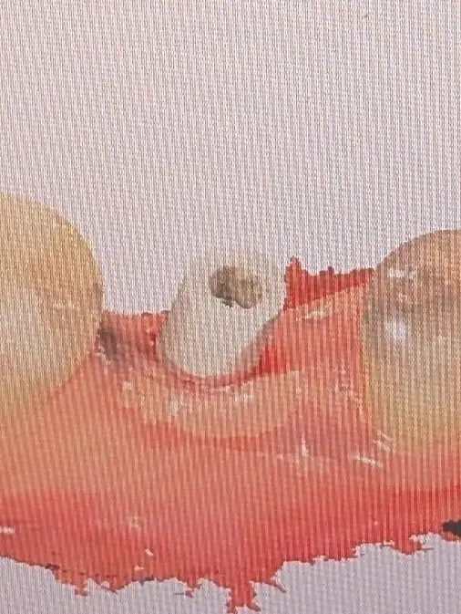

نسخه استخراجشده؛ ترجمه یا تأیید علمی انجام نشده است. وضعیت: captured
ایمپلنت Neodent، Ti-Base اوریجینال Neodent، ولی اسکن با اسکنبادی Arum. قرار است روکش روی Ti-Base اوریجینال Neodent ساخته شود، اما اسکن داخل دهان با اسکنبادی Arum انجام شده است. لابراتوار فایل اسکن را بررسی میکند و هشدار میدهد. مشکل کجاست؟

برای اینکه موقعیت ایمپلنت داخل نرمافزار مشخص شود، از قطعهای به نام اسکنبادی (Scanbody) استفاده میشود. اسکنبادی روی ایمپلنت بسته میشود و سپس با اسکنر داخل دهانی از آن اسکن گرفته میشود.
نرمافزار طراحی با دیدن شکل اسکنبادی در فایل اسکن میفهمد ایمپلنت دقیقاً در چه موقعیت و زاویهای قرار دارد. این کار با کمک لایبرری (Library) انجام میشود؛ لایبرری در واقع فایل دیجیتالی قطعات هر شرکت است که به نرمافزار کمک میکند شکل دقیق آنها را بشناسد.
بعد از مشخص شدن موقعیت ایمپلنت، لابراتوار روکش را طوری طراحی میکند که روی قطعات پروتزی سیستم مربوطه، مثل Ti-Base، قرار بگیرد و سمان شود.
در سیستم دیجیتال، اسکنبادی، لایبرری نرمافزار و Ti-Base باید با هم هماهنگ باشند.
به همین دلیل در بسیاری از موارد، سادهترین و کمریسکترین کار این است که اسکنبادی و Ti-Base از یک سیستم باشند، یا از قطعاتی که لایبرری آنها بهطور دقیق در نرمافزار وجود دارد. این هماهنگی کمک میکند طراحی دیجیتال دقیقتر انجام شود و روکش بدون مشکل روی Ti-Base و ایمپلنت فیت شود.